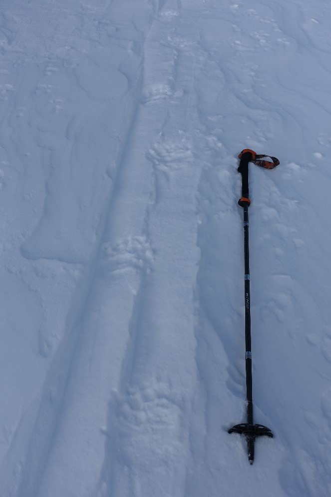
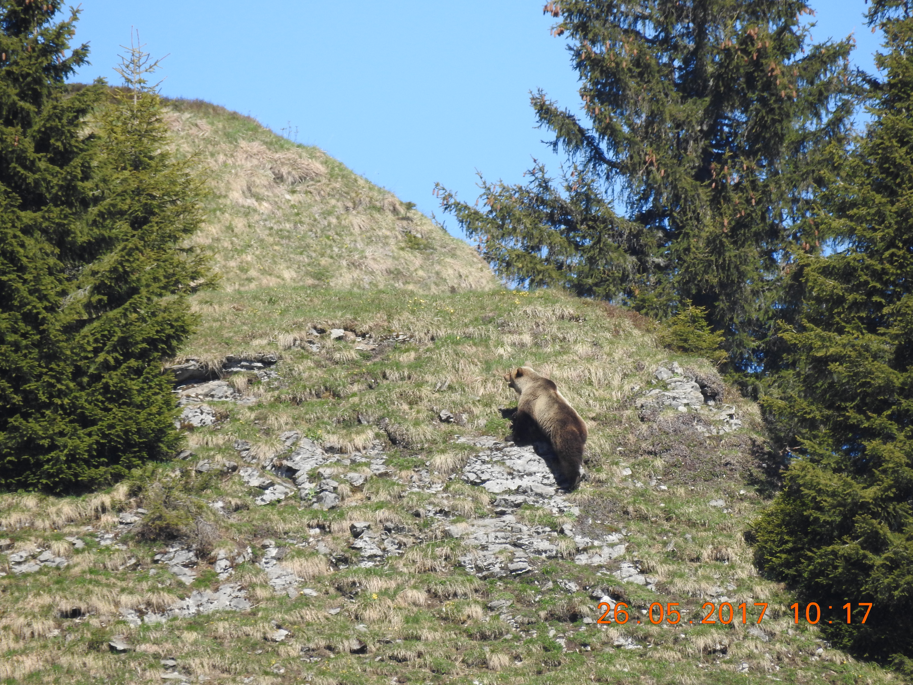
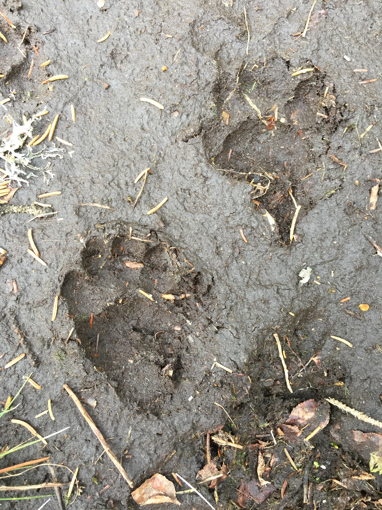
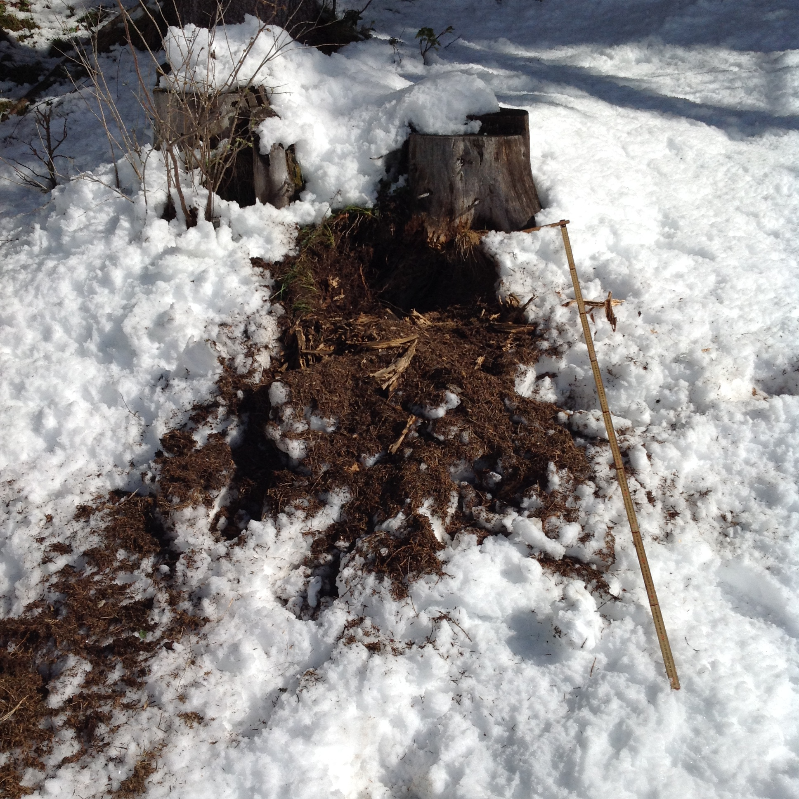
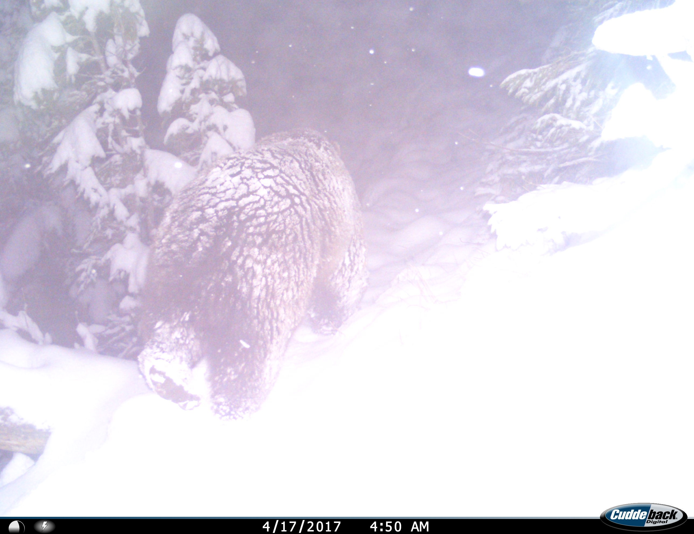
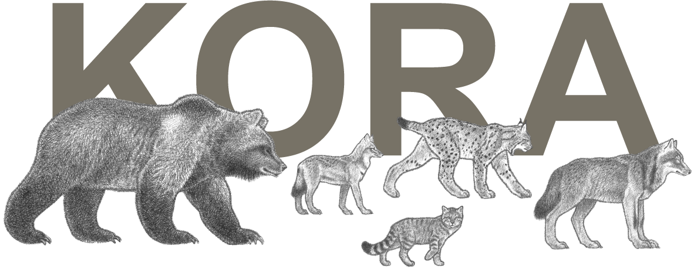

<!DOCTYPE html>
<html lang="en">
<head>
<meta charset="utf-8"/>
<style>body{background-color:white;}</style>
<link href="m29_map_egl_files/htmltools-fill-0.5.8.1/fill.css" rel="stylesheet" />
<script src="m29_map_egl_files/htmlwidgets-1.6.4/htmlwidgets.js"></script>
<script src="m29_map_egl_files/jquery-3.6.0/jquery-3.6.0.min.js"></script>
<link href="m29_map_egl_files/leaflet-1.3.1/leaflet.css" rel="stylesheet" />
<script src="m29_map_egl_files/leaflet-1.3.1/leaflet.js"></script>
<link href="m29_map_egl_files/leafletfix-1.0.0/leafletfix.css" rel="stylesheet" />
<script src="m29_map_egl_files/proj4-2.6.2/proj4.min.js"></script>
<script src="m29_map_egl_files/Proj4Leaflet-1.0.1/proj4leaflet.js"></script>
<link href="m29_map_egl_files/rstudio_leaflet-1.3.1/rstudio_leaflet.css" rel="stylesheet" />
<script src="m29_map_egl_files/leaflet-binding-2.2.2/leaflet.js"></script>
<script src="m29_map_egl_files/leaflet-providers-2.0.0/leaflet-providers_2.0.0.js"></script>
<script src="m29_map_egl_files/leaflet-providers-plugin-2.2.2/leaflet-providers-plugin.js"></script>
<link href="m29_map_egl_files/leaflet-easybutton-1.3.1/easy-button.css" rel="stylesheet" />
<script src="m29_map_egl_files/leaflet-easybutton-1.3.1/easy-button.js"></script>
<script src="m29_map_egl_files/leaflet-easybutton-1.3.1/EasyButton-binding.js"></script>
<link href="m29_map_egl_files/fontawesome-4.7.0/font-awesome.min.css" rel="stylesheet" />
  <title>leaflet</title>
</head>
<body>
<div id="htmlwidget_container">
  <div class="leaflet html-widget html-fill-item" id="htmlwidget-2415f757e00eb48059e2" style="width:100%;height:400px;"></div>
</div>
<script type="application/json" data-for="htmlwidget-2415f757e00eb48059e2">{"x":{"options":{"minZoom":6,"maxZoom":11.5,"crs":{"crsClass":"L.CRS.EPSG3857","code":null,"proj4def":null,"projectedBounds":null,"options":{}},"zoomSnap":0.1},"calls":[{"method":"addProviderTiles","args":["CartoDB.Positron",null,"Stamen Toner",{"errorTileUrl":"","noWrap":false,"detectRetina":false}]},{"method":"addProviderTiles","args":["Esri.WorldImagery",null,"Satellite",{"errorTileUrl":"","noWrap":false,"detectRetina":false}]},{"method":"addTiles","args":["https://wmts.geo.admin.ch/1.0.0/ch.swisstopo.pixelkarte-farbe/default/current/3857/{z}/{x}/{y}.jpeg",null,"Swisstopo",{"minZoom":0,"maxZoom":18,"tileSize":256,"subdomains":"abc","errorTileUrl":"","tms":false,"noWrap":false,"zoomOffset":0,"zoomReverse":false,"opacity":1,"zIndex":1,"detectRetina":false,"attribution":"© swisstopo"}]},{"method":"addLayersControl","args":[["Stamen Toner","Satellite","Swisstopo"],[],{"collapsed":true,"autoZIndex":true,"position":"topleft"}]},{"method":"addPolylines","args":[[[[{"lng":[9.284528757459555,9.253917846059851],"lat":[46.47610511996711,46.52460320571293]}]],[[{"lng":[9.253917846059851,9.400251196346019],"lat":[46.52460320571293,46.61346002190496]}]],[[{"lng":[9.400251196346019,9.472588076506689],"lat":[46.61346002190496,46.63238309313231]}]],[[{"lng":[9.472588076506689,9.37658993672453],"lat":[46.63238309313231,46.66298704210769]}]],[[{"lng":[9.37658993672453,9.419694030566779],"lat":[46.66298704210769,46.66295649238513]}]],[[{"lng":[9.419694030566779,8.971665099200191],"lat":[46.66295649238513,46.76056635294213]}]],[[{"lng":[8.971665099200191,8.587648053787261],"lat":[46.76056635294213,46.65730876168589]}]],[[{"lng":[8.587648053787261,8.761746899646322],"lat":[46.65730876168589,46.67080470805467]}]],[[{"lng":[8.761746899646322,8.832191321336333],"lat":[46.67080470805467,47.04247413308142]}]],[[{"lng":[8.832191321336333,8.779958346019166],"lat":[47.04247413308142,47.00621139860729]}]],[[{"lng":[8.779958346019166,8.695228220320047],"lat":[47.00621139860729,46.89237786945341]}]],[[{"lng":[8.695228220320047,8.716091570728222],"lat":[46.89237786945341,46.83699839780805]}]],[[{"lng":[8.716091570728222,8.700134538555824],"lat":[46.83699839780805,46.89173912823334]}]],[[{"lng":[8.700134538555824,8.779917771808702],"lat":[46.89173912823334,46.78252119976358]}]],[[{"lng":[8.779917771808702,8.850421284003874],"lat":[46.78252119976358,46.8575955361562]}]],[[{"lng":[8.850421284003874,8.748357979588828],"lat":[46.8575955361562,46.90500705730037]}]],[[{"lng":[8.748357979588828,8.698550236051759],"lat":[46.90500705730037,46.82354534889224]}]],[[{"lng":[8.698550236051759,8.712057792248164],"lat":[46.82354534889224,46.83329184704149]}]],[[{"lng":[8.712057792248164,8.688863150187863],"lat":[46.83329184704149,46.80542479168072]}]],[[{"lng":[8.688863150187863,8.678917945378025],"lat":[46.80542479168072,46.82076423346792]}]],[[{"lng":[8.678917945378025,8.674531578155181],"lat":[46.82076423346792,46.81066371799304]}]],[[{"lng":[8.674531578155181,8.660399968645718],"lat":[46.81066371799304,46.81212915925201]}]],[[{"lng":[8.660399968645718,8.521072452129159],"lat":[46.81212915925201,46.65382223802551]}]],[[{"lng":[8.521072452129159,8.513514006891695],"lat":[46.65382223802551,46.74345224932492]}]],[[{"lng":[8.513514006891695,7.862897566020758],"lat":[46.74345224932492,46.76355498452327]}]],[[{"lng":[7.862897566020758,7.839410619880989],"lat":[46.76355498452327,46.76498904063473]}]],[[{"lng":[7.839410619880989,7.9576899011633],"lat":[46.76498904063473,46.76523288909623]}]],[[{"lng":[7.9576899011633,8.414222950952029],"lat":[46.76523288909623,46.70205306347157]}]],[[{"lng":[8.414222950952029,8.452770085365399],"lat":[46.70205306347157,46.70052936170961]}]],[[{"lng":[8.452770085365399,8.291963320223319],"lat":[46.70052936170961,46.73542769401882]}]],[[{"lng":[8.291963320223319,8.279848604984982],"lat":[46.73542769401882,46.73047986512732]}]],[[{"lng":[8.279848604984982,8.281356367450392],"lat":[46.73047986512732,46.73655002018959]}]],[[{"lng":[8.281356367450392,8.565536340266055],"lat":[46.73655002018959,46.72977980695409]}]],[[{"lng":[8.565536340266055,8.515384185294451],"lat":[46.72977980695409,46.73880153218403]}]],[[{"lng":[8.515384185294451,8.452574068998699],"lat":[46.73880153218403,46.76668019155778]}]],[[{"lng":[8.452574068998699,8.397650227450008],"lat":[46.76668019155778,46.80705216395798]}]],[[{"lng":[8.397650227450008,8.359505224713804],"lat":[46.80705216395798,46.81517436800512]}]],[[{"lng":[8.359505224713804,8.233691622525804],"lat":[46.81517436800512,46.74736314432931]}]],[[{"lng":[8.233691622525804,8.096477257440078],"lat":[46.74736314432931,46.7733880298892]}]],[[{"lng":[8.096477257440078,8.270752482679413],"lat":[46.7733880298892,46.73450475771913]}]],[[{"lng":[8.270752482679413,7.807535185156981],"lat":[46.73450475771913,46.68845415792549]}]],[[{"lng":[7.807535185156981,7.756497709695478],"lat":[46.68845415792549,46.68123119039376]}]],[[{"lng":[7.756497709695478,7.822225611742476],"lat":[46.68123119039376,46.69542233173595]}]],[[{"lng":[7.822225611742476,7.914309275490498],"lat":[46.69542233173595,46.77450716657902]}]],[[{"lng":[7.914309275490498,8.054074304672305],"lat":[46.77450716657902,46.77965135286885]}]],[[{"lng":[8.054074304672305,8.05119209645008],"lat":[46.77965135286885,46.5523614774249]}]],[[{"lng":[8.05119209645008,7.595462776845741],"lat":[46.5523614774249,46.43918819045059]}]],[[{"lng":[7.595462776845741,7.297402056342631],"lat":[46.43918819045059,46.35232632851069]}]],[[{"lng":[7.297402056342631,8.034731226095159],"lat":[46.35232632851069,46.53770468186573]}]],[[{"lng":[8.034731226095159,8.422923363835611],"lat":[46.53770468186573,46.59973613725941]}]],[[{"lng":[8.422923363835611,8.498519166686478],"lat":[46.59973613725941,46.65299965405692]}]],[[{"lng":[8.498519166686478,8.681798684892334],"lat":[46.65299965405692,46.75933166720417]}]],[[{"lng":[8.681798684892334,8.601939212405739],"lat":[46.75933166720417,46.68689719769894]}]],[[{"lng":[8.601939212405739,8.493621341548392],"lat":[46.68689719769894,46.7969404872486]}]],[[{"lng":[8.493621341548392,8.258598793380054],"lat":[46.7969404872486,46.7802379907446]}]],[[{"lng":[8.258598793380054,8.362518533068393],"lat":[46.7802379907446,46.81437640026186]}]],[[{"lng":[8.362518533068393,8.273799683197165],"lat":[46.81437640026186,46.80035967251393]}]],[[{"lng":[8.273799683197165,8.266982245771564],"lat":[46.80035967251393,46.7249964626148]}]],[[{"lng":[8.266982245771564,8.133773930737261],"lat":[46.7249964626148,46.75970956173877]}]],[[{"lng":[8.133773930737261,8.044970139343668],"lat":[46.75970956173877,46.3960733755971]}]],[[{"lng":[8.044970139343668,8.035252274913395],"lat":[46.3960733755971,46.3884873695761]}]],[[{"lng":[8.035252274913395,8.149192121739333],"lat":[46.3884873695761,46.38189364801831]}]],[[{"lng":[8.149192121739333,8.228062470195763],"lat":[46.38189364801831,46.35457278818208]}]],[[{"lng":[8.228062470195763,8.289826612907515],"lat":[46.35457278818208,46.13960397641061]}]]],null,null,{"interactive":true,"className":"","stroke":true,"color":["#FDD262","#FDD262","#FDD262","#FDD262","#FDD262","#FDD262","#FDD262","#FDD262","#FDD262","#FDD262","#FDD262","#FDD262","#FDD262","#FDD262","#FDD262","#FDD262","#FDD262","#FDD262","#FDD262","#C7B19C","#C7B19C","#C7B19C","#C7B19C","#C7B19C","#C7B19C","#C7B19C","#C7B19C","#C7B19C","#C7B19C","#C7B19C","#C7B19C","#C7B19C","#C7B19C","#446455","#446455","#446455","#446455","#446455","#446455","#446455","#446455","#446455","#446455","#446455","#446455","#446455","#446455","#446455","#446455","#446455","#446455","#446455","#446455","#E8D79F","#E8D79F","#E8D79F","#E8D79F","#E8D79F","#E8D79F","#E8D79F","#E8D79F","#E8D79F","#E8D79F","#E8D79F"],"weight":4,"opacity":1,"fill":false,"fillColor":["#FDD262","#FDD262","#FDD262","#FDD262","#FDD262","#FDD262","#FDD262","#FDD262","#FDD262","#FDD262","#FDD262","#FDD262","#FDD262","#FDD262","#FDD262","#FDD262","#FDD262","#FDD262","#FDD262","#C7B19C","#C7B19C","#C7B19C","#C7B19C","#C7B19C","#C7B19C","#C7B19C","#C7B19C","#C7B19C","#C7B19C","#C7B19C","#C7B19C","#C7B19C","#C7B19C","#446455","#446455","#446455","#446455","#446455","#446455","#446455","#446455","#446455","#446455","#446455","#446455","#446455","#446455","#446455","#446455","#446455","#446455","#446455","#446455","#E8D79F","#E8D79F","#E8D79F","#E8D79F","#E8D79F","#E8D79F","#E8D79F","#E8D79F","#E8D79F","#E8D79F","#E8D79F"],"fillOpacity":0.2,"smoothFactor":1,"noClip":false},null,null,null,{"interactive":false,"permanent":false,"direction":"auto","opacity":1,"offset":[0,0],"textsize":"10px","textOnly":false,"className":"","sticky":true},null]},{"method":"addCircleMarkers","args":[[46.47610511996711,46.52460320571293,46.61346002190496,46.63238309313231,46.66298704210769,46.66295649238513,46.76056635294213,46.65730876168589,46.67080470805467,47.04247413308142,47.00621139860729,46.89237786945341,46.83699839780805,46.89173912823334,46.78252119976358,46.8575955361562,46.90500705730037,46.82354534889224,46.83329184704149,46.80542479168072,46.82076423346792,46.81066371799304,46.81212915925201,46.65382223802551,46.74345224932492,46.76355498452327,46.76498904063473,46.76523288909623,46.70205306347157,46.70052936170961,46.73542769401882,46.73047986512732,46.73655002018959,46.72977980695409,46.73880153218403,46.76668019155778,46.80705216395798,46.81517436800512,46.74736314432931,46.7733880298892,46.73450475771913,46.68845415792549,46.68123119039376,46.69542233173595,46.77450716657902,46.77965135286885,46.5523614774249,46.43918819045059,46.35232632851069,46.53770468186573,46.59973613725941,46.65299965405692,46.75933166720417,46.68689719769894,46.7969404872486,46.7802379907446,46.81437640026186,46.80035967251393,46.7249964626148,46.75970956173877,46.3960733755971,46.3884873695761,46.38189364801831,46.35457278818208,46.13960397641061],[9.284528757459555,9.253917846059851,9.400251196346019,9.472588076506689,9.37658993672453,9.419694030566779,8.971665099200191,8.587648053787261,8.761746899646322,8.832191321336333,8.779958346019166,8.695228220320047,8.716091570728222,8.700134538555824,8.779917771808702,8.850421284003874,8.748357979588828,8.698550236051759,8.712057792248164,8.688863150187863,8.678917945378025,8.674531578155181,8.660399968645718,8.521072452129159,8.513514006891695,7.862897566020758,7.839410619880989,7.9576899011633,8.414222950952029,8.452770085365399,8.291963320223319,8.279848604984982,8.281356367450392,8.565536340266055,8.515384185294451,8.452574068998699,8.397650227450008,8.359505224713804,8.233691622525804,8.096477257440078,8.270752482679413,7.807535185156981,7.756497709695478,7.822225611742476,7.914309275490498,8.054074304672305,8.05119209645008,7.595462776845741,7.297402056342631,8.034731226095159,8.422923363835611,8.498519166686478,8.681798684892334,8.601939212405739,8.493621341548392,8.258598793380054,8.362518533068393,8.273799683197165,8.266982245771564,8.133773930737261,8.044970139343668,8.035252274913395,8.149192121739333,8.228062470195763,8.289826612907515],5,null,null,{"interactive":true,"className":"","stroke":true,"color":["#FDD262","#FDD262","#FDD262","#FDD262","#FDD262","#FDD262","#FDD262","#FDD262","#FDD262","#FDD262","#FDD262","#FDD262","#FDD262","#FDD262","#FDD262","#FDD262","#FDD262","#FDD262","#FDD262","#C7B19C","#C7B19C","#C7B19C","#C7B19C","#C7B19C","#C7B19C","#C7B19C","#C7B19C","#C7B19C","#C7B19C","#C7B19C","#C7B19C","#C7B19C","#C7B19C","#446455","#446455","#446455","#446455","#446455","#446455","#446455","#446455","#446455","#446455","#446455","#446455","#446455","#446455","#446455","#446455","#446455","#446455","#446455","#446455","#E8D79F","#E8D79F","#E8D79F","#E8D79F","#E8D79F","#E8D79F","#E8D79F","#E8D79F","#E8D79F","#E8D79F","#E8D79F","#E8D79F"],"weight":0.7,"opacity":1,"fill":true,"fillColor":["#FDD262","#FDD262","#FDD262","#FDD262","#FDD262","#FDD262","#FDD262","#FDD262","#FDD262","#FDD262","#FDD262","#FDD262","#FDD262","#FDD262","#FDD262","#FDD262","#FDD262","#FDD262","#FDD262","#C7B19C","#C7B19C","#C7B19C","#C7B19C","#C7B19C","#C7B19C","#C7B19C","#C7B19C","#C7B19C","#C7B19C","#C7B19C","#C7B19C","#C7B19C","#C7B19C","#446455","#446455","#446455","#446455","#446455","#446455","#446455","#446455","#446455","#446455","#446455","#446455","#446455","#446455","#446455","#446455","#446455","#446455","#446455","#446455","#E8D79F","#E8D79F","#E8D79F","#E8D79F","#E8D79F","#E8D79F","#E8D79F","#E8D79F","#E8D79F","#E8D79F","#E8D79F","#E8D79F"],"fillOpacity":1},null,null,["<br><b>Date:<\/b> 2016-04-29<br><b>Type:<\/b> Picture<br><b>Description:<\/b> First sighting near the Swiss border: a hiker observed and photographed M29 migrating from Italy.","<br><b>Date:<\/b> 2016-05-02<br><b>Type:<\/b> Track","<br><b>Date:<\/b> 2016-05-06<br><b>Type:<\/b> Track","<br><b>Date:<\/b> 2016-05-06<br><b>Type:<\/b> Track","<br><b>Date:<\/b> 2016-05-08<br><b>Type:<\/b> Track","<br><b>Date:<\/b> 2016-05-10<br><b>Type:<\/b> Sighting<br><b>Description:<\/b> M29 was observed through the telescope","<br><b>Date:<\/b> 2016-05-11<br><b>Type:<\/b> Camera trap<br><b>Description:<\/b> M29 was caught in a photo trap set by a gamekeeper from the canton of Graubünden","<br><b>Date:<\/b> 2016-05-22<br><b>Type:<\/b> Sighting<br><b>Description:<\/b> Change of canton GR-UR: M29 was spotted by a motorist in Göschenen","<br><b>Date:<\/b> 2016-05-24<br><b>Type:<\/b> Sighting<br><b>Description:<\/b> The bear returned to the Surselva region and was spotted below the Oberalp Pass.","<br><b>Date:<\/b> 2016-05-25<br><b>Type:<\/b> Track<br><b>Description:<\/b> The bear was detected for the first time in the canton of Schwyz.","<br><b>Date:<\/b> 2016-05-26<br><b>Type:<\/b> Sighting<br><b>Description:<\/b> Just one day later: M29 was photographed during a visual observation.","<br><b>Date:<\/b> 2016-06-14<br><b>Type:<\/b> Genetics<br><b>Description:<\/b> A farmer noticed bear tracks and found hairs. Genetic analysis confirmed that M29 was back in the canton of Uri.","<br><b>Date:<\/b> 2016-06-15<br><b>Type:<\/b> Track","<br><b>Date:<\/b> 2016-06-16<br><b>Type:<\/b> Genetics<br><b>Description:<\/b> Genetic testing of a new hair sample provided the proof: M29 was back.","<br><b>Date:<\/b> 2016-06-21<br><b>Type:<\/b> Track","<br><b>Date:<\/b> 2016-06-23<br><b>Type:<\/b> Track","<br><b>Date:<\/b> 2016-07-02<br><b>Type:<\/b> Scat","<br><b>Date:<\/b> 2016-10-29<br><b>Type:<\/b> Track","<br><b>Date:<\/b> 2016-10-31<br><b>Type:<\/b> several unverifiable indications<br><b>Description:<\/b> Before hibernation: Where exactly he spent the winter is unknown.","<br><b>Date:<\/b> 2017-03-26<br><b>Type:<\/b> Track<br><b>Description:<\/b> M29 had awakened from his hibernation.","<br><b>Date:<\/b> 2017-04-17<br><b>Type:<\/b> Picture<br><b>Description:<\/b> M29 was captured by a camera trap.","<br><b>Date:<\/b> 2017-04-17<br><b>Type:<\/b> Damage to beehouse<br><b>Description:<\/b> M29 helped himself to some honey from an apiary.","<br><b>Date:<\/b> 2017-04-22<br><b>Type:<\/b> Picture<br><b>Description:<\/b> The bear was detected using a camera trap image.","<br><b>Date:<\/b> 2017-05-07<br><b>Type:<\/b> Genetics<br><b>Description:<\/b> M29 has been genetically detected.","<br><b>Date:<\/b> 2017-05-09<br><b>Type:<\/b> Track<br><b>Description:<\/b> Fresh and clearly visible bear tracks in the snow confirmed it: he had been here!","<br><b>Date:<\/b> 2017-05-23<br><b>Type:<\/b> Track<br><b>Description:<\/b> A gamekeeper found traces of a bear. The different prints of the front and hind paws were clearly visible.","<br><b>Date:<\/b> 2017-05-26<br><b>Type:<\/b> Picture<br><b>Description:<\/b> The canton of Bern had its emblematic animal back: a farmer observed and photographed M29.","<br><b>Date:<\/b> 2017-05-28<br><b>Type:<\/b> Picture","<br><b>Date:<\/b> 2017-06-28<br><b>Type:<\/b> Track","<br><b>Date:<\/b> 2017-06-30<br><b>Type:<\/b> Sighting<br><b>Description:<\/b> A mountaineer spotted M29 on the glacier of the Sustenhorn.","<br><b>Date:<\/b> 2017-09-01<br><b>Type:<\/b> Sighting<br><b>Description:<\/b> A hunter managed to spot the bear; he then collected a hair, which was later genetically confirmed to belong to M29.","<br><b>Date:<\/b> 2017-09-11<br><b>Type:<\/b> Sighting<br><b>Description:<\/b> A hunter observed the bear during deer hunting season.","<br><b>Date:<\/b> 2017-09-30<br><b>Type:<\/b> several unverifiable indications<br><b>Description:<\/b> Before hibernation, there were several unverifiable sightings in the canton of Bern. Where exactly he spent the winter is unknown.","<br><b>Date:<\/b> 2018-04-04<br><b>Type:<\/b> Sighting<br><b>Description:<\/b> M29 in the snow: He probably hadn't been out of hibernation for long.","<br><b>Date:<\/b> 2018-04-06<br><b>Type:<\/b> Scat","<br><b>Date:<\/b> 2018-04-08<br><b>Type:<\/b> Picture<br><b>Description:<\/b> The next canton: M29 was detected for the first time in the canton of Obwalden.","<br><b>Date:<\/b> 2018-04-09<br><b>Type:<\/b> Picture<br><b>Description:<\/b> A tourist was able to photograph the bear from the cable car on the way to Titlis.","<br><b>Date:<\/b> 2018-04-10<br><b>Type:<\/b> Scat<br><b>Description:<\/b> From Obwalden to Nidwalden: A fecal sample confirmed M29's next change of canton.","<br><b>Date:<\/b> 2018-04-22<br><b>Type:<\/b> Track","<br><b>Date:<\/b> 2018-05-05<br><b>Type:<\/b> Camera trap<br><b>Description:<\/b> Hunter reported: ‘Brown bear on my camera trap.’","<br><b>Date:<\/b> 2018-05-07<br><b>Type:<\/b> Genetics<br><b>Description:<\/b> Thanks to a feces analysis, the bear could be genetically confirmed.","<br><b>Date:<\/b> 2018-05-21<br><b>Type:<\/b> Track<br><b>Description:<\/b> M29 damaged the front of an apiary (without reaching the honey, larvae or honeycombs).","<br><b>Date:<\/b> 2018-05-21<br><b>Type:<\/b> Sighting<br><b>Description:<\/b> M29 was filmed on the road at Beatenbucht.","<br><b>Date:<\/b> 2018-05-22<br><b>Type:<\/b> Damage to beehouse<br><b>Description:<\/b> One day later: Further damage to an apiary reported.","<br><b>Date:<\/b> 2018-05-25<br><b>Type:<\/b> Scat<br><b>Description:<\/b> A hiker found brown bear feces","<br><b>Date:<\/b> 2018-06-02<br><b>Type:<\/b> Picture<br><b>Description:<\/b> The bear was once again captured on a camera trap.","<br><b>Date:<\/b> 2018-06-19<br><b>Type:<\/b> Picture<br><b>Description:<\/b> From the air: Paraglider pilot spotted M29 on the Fiescherhorn glacier (Canton of Valais).","<br><b>Date:<\/b> 2018-07-08<br><b>Type:<\/b> Track","<br><b>Date:<\/b> 2018-07-08<br><b>Type:<\/b> Track","<br><b>Date:<\/b> 2018-08-03<br><b>Type:<\/b> Sighting<br><b>Description:<\/b> M29 was observed from an Air Zermatt helicopter.","<br><b>Date:<\/b> 2018-08-06<br><b>Type:<\/b> Sighting","<br><b>Date:<\/b> 2018-08-15<br><b>Type:<\/b> Picture<br><b>Description:<\/b> In Uri, the bear was once again recorded on a camera trap.","<br><b>Date:<\/b> 2018-11-03<br><b>Type:<\/b> Track<br><b>Description:<\/b> Back in the canton of Uri: hikers reported fresh bear tracks. The responsible gamekeeper confirmed this.","<br><b>Date:<\/b> 2019-04-19<br><b>Type:<\/b> Track<br><b>Description:<\/b> Hibernation over: M29 left fresh tracks in the snow.","<br><b>Date:<\/b> 2019-04-24<br><b>Type:<\/b> Track","<br><b>Date:<\/b> 2019-04-29<br><b>Type:<\/b> Track","<br><b>Date:<\/b> 2019-04-30<br><b>Type:<\/b> Track<br><b>Description:<\/b> The bear had already run through practically the same spot the year before.","<br><b>Date:<\/b> 2019-05-01<br><b>Type:<\/b> Track","<br><b>Date:<\/b> 2019-05-07<br><b>Type:<\/b> Track<br><b>Description:<\/b> A gamekeeper was able to follow the bear's trail for several hundred meters. During its wanderings, M29 rummaged through two anthills.","<br><b>Date:<\/b> 2019-05-21<br><b>Type:<\/b> Genetics<br><b>Description:<\/b> A genetic sample once again confirmed M29’s presence in the canton of Bern.","<br><b>Date:<\/b> 2019-06-04<br><b>Type:<\/b> Video<br><b>Description:<\/b> M29 was filmed and photographed between Riederalp and Bettmeralp.","<br><b>Date:<\/b> 2019-06-08<br><b>Type:<\/b> Genetics<br><b>Description:<\/b> Once again, a genetic analysis of a fecal sample confirmed the presence of a bear.","<br><b>Date:<\/b> 2019-06-22<br><b>Type:<\/b> Video<br><b>Description:<\/b> A driver on their way home observed M29 on a road, until he disappeared into the forest.","<br><b>Date:<\/b> 2019-06-23<br><b>Type:<\/b> Track<br><b>Description:<\/b> The last traces on Swiss soil were documented over a length of 50 meters.","<br><b>Date:<\/b> 2019-06-28<br><b>Type:<\/b> Genetics<br><b>Description:<\/b> Back in Italy: only a few days after the last traces in Switzerland, M29 was confirmed from a blood trail. Since then, he has been living west of Lake Maggiore on the Italian side."],null,null,{"interactive":false,"permanent":false,"direction":"auto","opacity":1,"offset":[0,0],"textsize":"10px","textOnly":false,"className":"","sticky":true},null]},{"method":"addEasyButton","args":[{"icon":"fa-globe","title":"Reset Zoom","onClick":"function(btn, map){ \n                   map.setView([\n46.7035048812957\n, \n8.44808888770568\n], 9.3);\n                }","position":"topleft"}]},{"method":"addScaleBar","args":[{"maxWidth":100,"metric":true,"imperial":false,"updateWhenIdle":true,"position":"bottomleft"}]},{"method":"addLegend","args":[{"colors":["#FDD262","#C7B19C","#446455","#E8D79F"],"labels":["2016","2017","2018","2019"],"na_color":null,"na_label":"NA","opacity":1,"position":"topright","type":"factor","title":"Year","extra":null,"layerId":null,"className":"info legend","group":null}]},{"method":"addCircleMarkers","args":[46.76668019155778,8.452574068998699,5,null,null,{"interactive":true,"className":"","stroke":true,"color":"black","weight":1,"opacity":1,"fill":true,"fillColor":"#446455","fillOpacity":1},null,null,"<br><b>Date:<\/b> 2018-04-08<br><b>Type:<\/b> Picture<br><b>Description:<\/b> The next canton: M29 was detected for the first time in the canton of Obwalden.<br><div style='font-size:10px; color:#666; text-align:left; margin-top:2px;'>© Pierre Berset<\/div>",null,null,{"interactive":false,"permanent":false,"direction":"auto","opacity":1,"offset":[0,0],"textsize":"10px","textOnly":false,"className":"","sticky":true},null]},{"method":"addCircleMarkers","args":[46.76668019155778,8.452574068998699,1,null,null,{"interactive":true,"className":"","stroke":true,"color":"black","weight":1,"opacity":1,"fill":true,"fillColor":"#446455","fillOpacity":1},null,null,"<br><b>Date:<\/b> 2018-04-08<br><b>Type:<\/b> Picture<br><b>Description:<\/b> The next canton: M29 was detected for the first time in the canton of Obwalden.<br><div style='font-size:10px; color:#666; text-align:left; margin-top:2px;'>© Pierre Berset<\/div>",null,null,{"interactive":false,"permanent":false,"direction":"auto","opacity":1,"offset":[0,0],"textsize":"10px","textOnly":false,"className":"","sticky":true},null]},{"method":"addCircleMarkers","args":[46.76498904063473,7.839410619880989,5,null,null,{"interactive":true,"className":"","stroke":true,"color":"black","weight":1,"opacity":1,"fill":true,"fillColor":"#C7B19C","fillOpacity":1},null,null,"<br><b>Date:<\/b> 2017-05-26<br><b>Type:<\/b> Picture<br><b>Description:<\/b> The canton of Bern had its emblematic animal back: a farmer observed and photographed M29.<br><div style='font-size: 10px; color: #666; text-align: left; margin-top: 2px;'>© Walter Gyger, Jagdinspektorat Bern<\/div>",null,null,{"interactive":false,"permanent":false,"direction":"auto","opacity":1,"offset":[0,0],"textsize":"10px","textOnly":false,"className":"","sticky":true},null]},{"method":"addCircleMarkers","args":[46.76498904063473,7.839410619880989,1,null,null,{"interactive":true,"className":"","stroke":true,"color":"black","weight":1,"opacity":1,"fill":true,"fillColor":"#C7B19C","fillOpacity":1},null,null,"<br><b>Date:<\/b> 2017-05-26<br><b>Type:<\/b> Picture<br><b>Description:<\/b> The canton of Bern had its emblematic animal back: a farmer observed and photographed M29.<br><div style='font-size: 10px; color: #666; text-align: left; margin-top: 2px;'>© Walter Gyger, Jagdinspektorat Bern<\/div>",null,null,{"interactive":false,"permanent":false,"direction":"auto","opacity":1,"offset":[0,0],"textsize":"10px","textOnly":false,"className":"","sticky":true},null]},{"method":"addCircleMarkers","args":[46.72977980695409,8.565536340266055,5,null,null,{"interactive":true,"className":"","stroke":true,"color":"black","weight":1,"opacity":1,"fill":true,"fillColor":"#446455","fillOpacity":1},null,null,"<br><b>Date:<\/b> 2018-04-04<br><b>Type:<\/b> Sighting<br><b>Description:<\/b> M29 in the snow: He probably hadn't been out of hibernation for long.<br><video width='240' controls preload='metadata' style='display:block; margin:5px 0;' playsinline muted><source src='data/Indergand.mp4' type='video/mp4'>Ihr Browser unterstützt das HTML5-Video-Tag nicht.<\/video><div style='font-size:10px; color:#666; text-align:left; margin-top:2px;'>© Amt für Forst und Jagd Uri, Peter Indergand<\/div>",null,null,{"interactive":false,"permanent":false,"direction":"auto","opacity":1,"offset":[0,0],"textsize":"10px","textOnly":false,"className":"","sticky":true},null]},{"method":"addCircleMarkers","args":[46.72977980695409,8.565536340266055,1,null,null,{"interactive":true,"className":"","stroke":true,"color":"black","weight":1,"opacity":1,"fill":true,"fillColor":"#446455","fillOpacity":1},null,null,"<br><b>Date:<\/b> 2018-04-04<br><b>Type:<\/b> Sighting<br><b>Description:<\/b> M29 in the snow: He probably hadn't been out of hibernation for long.<br><video width='240' controls preload='metadata' style='display:block; margin:5px 0;' playsinline muted><source src='data/Indergand.mp4' type='video/mp4'>Ihr Browser unterstützt das HTML5-Video-Tag nicht.<\/video><div style='font-size:10px; color:#666; text-align:left; margin-top:2px;'>© Amt für Forst und Jagd Uri, Peter Indergand<\/div>",null,null,{"interactive":false,"permanent":false,"direction":"auto","opacity":1,"offset":[0,0],"textsize":"10px","textOnly":false,"className":"","sticky":true},null]},{"method":"addCircleMarkers","args":[46.76355498452327,7.862897566020758,5,null,null,{"interactive":true,"className":"","stroke":true,"color":"black","weight":1,"opacity":1,"fill":true,"fillColor":"#C7B19C","fillOpacity":1},null,null,"<br><b>Date:<\/b> 2017-05-23<br><b>Type:<\/b> Track<br><b>Description:<\/b> A gamekeeper found traces of a bear. The different prints of the front and hind paws were clearly visible.<br><div style='font-size: 10px; color: #666; text-align: left; margin-top: 2px;'>© Jagdinspektorat Bern<\/div>",null,null,{"interactive":false,"permanent":false,"direction":"auto","opacity":1,"offset":[0,0],"textsize":"10px","textOnly":false,"className":"","sticky":true},null]},{"method":"addCircleMarkers","args":[46.76355498452327,7.862897566020758,1,null,null,{"interactive":true,"className":"","stroke":true,"color":"black","weight":1,"opacity":1,"fill":true,"fillColor":"#C7B19C","fillOpacity":1},null,null,"<br><b>Date:<\/b> 2017-05-23<br><b>Type:<\/b> Track<br><b>Description:<\/b> A gamekeeper found traces of a bear. The different prints of the front and hind paws were clearly visible.<br><div style='font-size: 10px; color: #666; text-align: left; margin-top: 2px;'>© Jagdinspektorat Bern<\/div>",null,null,{"interactive":false,"permanent":false,"direction":"auto","opacity":1,"offset":[0,0],"textsize":"10px","textOnly":false,"className":"","sticky":true},null]},{"method":"addCircleMarkers","args":[46.7249964626148,8.266982245771564,5,null,null,{"interactive":true,"className":"","stroke":true,"color":"black","weight":1,"opacity":1,"fill":true,"fillColor":"#E8D79F","fillOpacity":1},null,null,"<br><b>Date:<\/b> 2019-05-07<br><b>Type:<\/b> Track<br><b>Description:<\/b> A gamekeeper was able to follow the bear's trail for several hundred meters. During its wanderings, M29 rummaged through two anthills.<br><div style='font-size: 10px; color: #666; text-align: left; margin-top: 2px;'>© Jagdinspektorat Bern<\/div>",null,null,{"interactive":false,"permanent":false,"direction":"auto","opacity":1,"offset":[0,0],"textsize":"10px","textOnly":false,"className":"","sticky":true},null]},{"method":"addCircleMarkers","args":[46.7249964626148,8.266982245771564,1,null,null,{"interactive":true,"className":"","stroke":true,"color":"black","weight":1,"opacity":1,"fill":true,"fillColor":"#E8D79F","fillOpacity":1},null,null,"<br><b>Date:<\/b> 2019-05-07<br><b>Type:<\/b> Track<br><b>Description:<\/b> A gamekeeper was able to follow the bear's trail for several hundred meters. During its wanderings, M29 rummaged through two anthills.<br><div style='font-size: 10px; color: #666; text-align: left; margin-top: 2px;'>© Jagdinspektorat Bern<\/div>",null,null,{"interactive":false,"permanent":false,"direction":"auto","opacity":1,"offset":[0,0],"textsize":"10px","textOnly":false,"className":"","sticky":true},null]},{"method":"addCircleMarkers","args":[46.82076423346792,8.678917945378025,5,null,null,{"interactive":true,"className":"","stroke":true,"color":"black","weight":1,"opacity":1,"fill":true,"fillColor":"#C7B19C","fillOpacity":1},null,null,"<br><b>Date:<\/b> 2017-04-17<br><b>Type:<\/b> Picture<br><b>Description:<\/b> M29 was captured by a camera trap.<br><div style='font-size: 10px; color: #666; text-align: left; margin-top: 2px;'>© Amt für Forst und Jagd Uri, Urs Herger<\/div>",null,null,{"interactive":false,"permanent":false,"direction":"auto","opacity":1,"offset":[0,0],"textsize":"10px","textOnly":false,"className":"","sticky":true},null]},{"method":"addCircleMarkers","args":[46.82076423346792,8.678917945378025,1,null,null,{"interactive":true,"className":"","stroke":true,"color":"black","weight":1,"opacity":1,"fill":true,"fillColor":"#C7B19C","fillOpacity":1},null,null,"<br><b>Date:<\/b> 2017-04-17<br><b>Type:<\/b> Picture<br><b>Description:<\/b> M29 was captured by a camera trap.<br><div style='font-size: 10px; color: #666; text-align: left; margin-top: 2px;'>© Amt für Forst und Jagd Uri, Urs Herger<\/div>",null,null,{"interactive":false,"permanent":false,"direction":"auto","opacity":1,"offset":[0,0],"textsize":"10px","textOnly":false,"className":"","sticky":true},null]},{"method":"addControl","args":["<div style='background: transparent; padding: 0; box-shadow: none;'>\n         \n       <\/div>","bottomleft",null,"info legend"]}],"limits":{"lat":[46.13960397641061,47.04247413308142],"lng":[7.297402056342631,9.472588076506689]},"setView":[[46.70350488129574,8.44808888770568],9.300000000000001,[]]},"evals":["calls.6.args.0.onClick"],"jsHooks":[]}</script>
<script type="application/htmlwidget-sizing" data-for="htmlwidget-2415f757e00eb48059e2">{"viewer":{"width":"100%","height":400,"padding":0,"fill":true},"browser":{"width":"100%","height":400,"padding":0,"fill":true}}</script>
</body>
</html>
